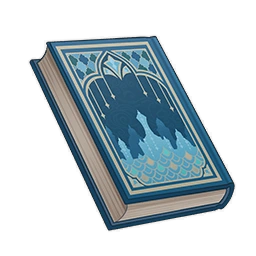

A Thousand Nights¶

Vol. 1 - The Tale of Those Without Shadows¶
Note
A wandering researcher once walked through rainforest, desert, and city during a time of great catastrophe, collecting these stories along the way. It is said that the original work truly did contain countless tales and that naught but a fragment of that is still extant today.
Once, this land was home to a group of a people without shadows.
They led simple lives, knowing nothing about the world outside the place where they lived.
This lasted until one day, when a lost adventurer discovered them. The shadowless folk were shocked to find that the adventurer had a lockstep attendant, silent and loyal. The adventurer, too, was shocked to see that people lived in the world who would not cast a shadow because of the sunlight.
"Never in my wildest dreams did I think that I would make such a discovery," said the adventurer.
"Dreams? We have not had those in a long time," said one of the shadowless people. "Our elders tell us that all dreams have already been dreamed."
"Shadows hide the secrets of the soul. You have no shadows, and that is why you do not dream," said the adventurer. "Perhaps you did once have shadows, just like you once did dream."
"If that is so, where shall I go to find that which I have lost?"
"Go to the secret forest. Many dreams dwell there, and perhaps those who capture dreams there may have some extras to share with you."
And so, the young shadowless person left his homeland behind, traveling far off to visit the secret forest the adventurer had spoken of. This forest was filled with layers of shadows: the shadows of the clouds, tree canopies... Even the tiny birds cast large shadows over the soft soil.
Day after day, he passed between the crisscrossed shadows. Shadows hide the soul's secrets, he thought, and perhaps he was the only one here without any secrets. And so, one day, he discovered that all dreamscapes were open to him, for he had no dreams, but it was because of this that he could enter the dreams of others.
In the many dreams he witnessed, the birds dreamed of vivid colors, the tiger of fragrant scents, but he did not see those who capture dreams, nor did he discover the excess dreams that were spoken of. The dreams, the shadows, and the beings that dwelt here could be matched one for one... and so he wondered if the adventurer had cheated him, and if there really was no such thing as a masterless dream, just as there was no such thing as a shadow without a source.
But just as he was about to admit defeat, the one who captures dreams found him. Their encounter happened within the dream of a seashell. He barged into its ending, searching for the white waves and the salty wind, but neither was to be found in its saddened aftertaste.
"Just like this shell, you do not belong to this forest."
The speaker was a woman, and he quickly realized that she was the dream-captor spoken the adventurer spoke of, for her shadow had a strange, mottled texture, like drapery encrusted with gems.
"I have been looking for you," he said. "Perhaps you have some extra dreams..."
"They pass like the morning dew..." She said, and there was no sadness in her voice. "Masterless dreams cannot last long. I have tried many times, but they always dissipate in the end."
"...See, just like this seashell... We must both leave." Taking his hand, she led him from this fading dream bereft of white waves and salty winds.
Beside a murmuring brook, she told him a great many stories, and taught him how to enter dreams. After that, she warned him multiple times concerning the taboos of the dream-captors, such as how they should never gaze repeatedly into another's dream, for their secrets are like a bottomless well.
"The nightmares are more cunning than you can imagine. Once they discover what you have done, they will arise like a swarm and drag you into the darkness. You will not be able to leave that place, the boundary where no shadows are. If you wait long enough, you will be able to make out meaningful words, names that linger in faded memories that no longer belong anywhere. And you know that you must not speak the names of the dead, or they will seek you out..."
"I once believed that none of you had shadows," he said honestly. "I once believed that dream-captors did not have their own dreams, which is why they collected those that belong to others."
The woman did not reply, her mottled shadow swaying in the night wind like a leaf.
But the young shadowless man was too eager for the answer, and though the dream-captor defended the shadows well, he found his chance nonetheless. Unlike the dreams of the forest beings, whose dream-gates were wide open, it was a rugged path that led to the dream-captor's dreamscape.
It seemed evident to him that she had hidden her secrets in others' dreams, he thought, but what were her secrets? And whose dreams were these?
The dream-captor's dream was many-layered, just like the secret forest, and so he lost his way, and before he knew it, the nightmares were upon him.
"I have broken the dream-captor's taboo, but even if I can see that bottomless well, I cannot find my answer," he thought. "She said that if I stayed long enough, I might able to make out a name from their voices. At least that way, I will know whose dream this is."
And so he allowed himself to be led into the depths, and just as the woman had warned him, it was a boundless, lightless realm. He listened then for the tiny sounds, hoping to find words that could point to a name.
An unknown period of time passed before he finally heard a name amidst the scattered sounds. This sound had a strange, special attraction to him, and he could not help but recite it.
Then he opened his eyes.
"I saw a strange sight," he said. "I saw that a woman had entered my dreams and stolen them, stolen secrets of my soul that I didn't know existed, and since that day, I no longer had a shadow. And I heard her say this, and she called me..."
"You know," she said, interrupting him, "that one should not speak the names of the dead, or they will seek you out..."
The dream-captor sat by the murmuring brook, her mottled shadow swaying in the night wind like a leaf.
"That is but a tale about the dead. I have told you such tales before, but there are many more that have yet to be told."
And so the dream-captor continued to tell the young man with no shadow a story that none have yet heard...
Vol. 2 - The Tale of the Dastur¶
Note
A wandering researcher once walked through rainforest, desert, and city during a time of great catastrophe, collecting these stories along the way. It is said that the original work truly did contain countless tales and that naught but a fragment of that is still extant today.
Once upon a time, there was a Vahumana Dastur who traveled alone into the desert depths to investigate the ruins of ancient realms. Unfortunately, he encountered a sandstorm and lost his way. But just as he was about to breathe his last, a young woman with amber eyes appeared before him. She parted the howling sands with the staff in her hand, and led him out of the desert.
It was already noon by the time they reached the village. She treated him to lunch at her home and offered to escort him back to Caravan Ribat. But, having seen her part the sands as if by some spell, and how she had chased the dark beasts along their path away, the Dastur refused to leave, instead asking if she could teach him the secret arts of ancient lands.
The mage replied that her amber eyes could see all that the living and the dead had seen. People without shadows, a bronze clock whose pendulum swings by the power of imagination, whales that have never left land, a city that only exists by the reflected moonlight upon a silver mirror, a scholar imprisoned within eternity, a high tower hanging upon seven strings. She could see that he had infinite potential and a boundless future ahead of him, and she was indeed willing to teach him all she knew. She had but one worry — that after learning all, he would seek his own profit and come to deny her.
The Dastur knelt to the ground and kissed the tip of her shoes, promising that he would never forget what she had done for him no matter what, and that he would never deny her, even if they should then die together. His earnestness touched the young mage, and smiling gently, she helped him up. Holding his hand, she brought him to the door to her basement, saying that she would indeed take him as her disciple, and that all her secrets were hidden in her underground library.
And so they walked down the winding stairs, level after level, with a mirror hung on the wall of each level, reflecting their faces and the feeble light of lit sconces. They walked for who knows how long — perhaps several hours, perhaps several minutes — for the darkness had obscured their sense of time. At the end of the stairs was a narrow gate, and behind the gate was a hexagonal library. He could not see the ceiling, nor could he estimate the height of this room, but the books in here nonetheless far surpassed all he imagined was possible for knowledge.
He learned well under her tutelage, but after a few weeks, envoys from the Temple of Silence would come to the Dastur and tell him that his mentor had passed on due to illness and that owing to his thesis passing review, the Akademiya had decided to make an exception for him and promote him to Herbad, that he might take over from his mentor and continue to educate more students. The newly-appointed Herbad was greatly pleased, and yet he was unwilling to leave yet, and so he carefully asked the mage if she could bring some of her books and come with him to the Akademiya, and there continue to teach him. She agreed to his invitation, but said that she had a sister who had always longed to learn at the Akademiya but was ultimately not accepted due to her desert heritage. She thus asked if the Herbad could take her own as an auditing pupil. The Herbad replied that the Akademiya had a strict testing process and that he could not make exceptions, not even to take someone on as an auditing pupil. The mage for her part said nothing more, simply packing her bags and following him to Sumeru.
Several years later, the sage of Vahumana passed on. Thanks to the earth-shaking theses he had been able to write and complete with the aid of the mage, it was unsurprising that the Herbad was recommended to become the new sage. The mage went to congratulate him, and asked if he might take her sister on as an auditing student now that he had his position as a sage. The newly-appointed sage rejected her, saying that he had no duty to do this, for he no longer needed her guidance, being someone who no longer needed to write theses. He advised her to return to her village and live out the rest of her days in peace. The mage said nothing more, and packing her bags, she returned to the desert.
Several years later, the Grand Sage too passed, and the Vahumana sage was selected to take the post. Hearing this news, the mage came hurriedly from the desert. Finding him, she knelt at his feet and kissed the tip of his shoe, reminding him of the promise he had made her and begging him to take those of her tribe who had been displaced by the sandstorms in and allow them to have refuge beneath the rainforest bower. The Grand Sage was furious and threatened to hurl her into a jail of bronze and leave her to die of starvation and thirst, for he did not know this charlatan of the desert wastes, and who was she, anyway, to coerce the Akademiya? The mage, no longer young, lifted her head, wiping the tears from her cheeks, and looked upon the Grand Sage one last time with her turbid amber eyes. She begged that she might be allowed to return to her village and help her tribespeople. Refusing, the Grand Sage had his soldiers bind her. And so the mage said little more to him save only this:
"In that case, I must ask you, sir, to return to your own village."
The Grand Sage was startled, and when he had lifted his head, he found himself standing before Caravan Ribat. The night had grown long, and the distant village could no longer be seen clearly, shrouded as it now was in flying dust and sand and night's own cloak. The young woman stood before him, smiling, and her amber eyes reflected how he appeared at this moment: the Dastur of Vahumana, whose thesis had yet to pass review.
"Well then, the hour is late, and you should return to the Akademiya now. After all, just as the stories say..."
Vol. 3 - The Tale of the Prince and the Sumpter Beast¶
Note
A wandering researcher once walked through rainforest, desert, and city during a time of great catastrophe, collecting these stories along the way. It is said that the original work truly did contain countless tales and that naught but a fragment of that is still extant today.
Long, long ago, when Port Ormos was still ruled by the seafaring Deys, there was one valiant Dey amongst their number. He was the subjugator of countless isles and domains, thus obtaining many curious treasures and becoming second to none in wealth throughout the port. Yet the mariner's life had left him time for but a single son in his latter years, and passed away before the prince would reach adulthood.
The Dey's son had inherited his great wealth, but had no power over those his father had administered. Guided by elders who lacked moral fiber, he quickly began to live the life of a sensuous animal. The prosperous streets of Port Ormos were like a beast that swallowed gold, and so the Dey's inheritance was emptied by the princeling within a few years, even saddling him with a massive debt in the process. By the time the prince came to his senses, the walls of his home were bare, with not a single Mora to be found within. After selling his estates and dismissing the servants, the prince, with nowhere to go, sought refuge at a shrine to an ancient patron god of mariners, which through the patronage of his father in turn had attained its current august stature.
The prince asked the shrine's priest for aid thusly: "Wise elder, I was once the son of a Dey who conquered the seven seas, but see, I have fallen this far due to my unconstrained extravagance. I beg that you have mercy upon me and show me a swift way through which I might clear my debts and ransom my estates. I promise that I will change for the better and become a man who knows his place."
"Young prince," the priest said, "the fates of mortals have long been ordained by the gods, but they must accomplish those fates themselves. Since you desire to turn over a new leaf, should you not begin through hard work rather than relying on opportunism?"
The prince quickly replied, "my father was a great patron of this shrine, so if we must argue, half of the golden statues and indeed, your expenses, should belong to me by right. And am I not here to claim this debt I am owed?"
"Arrogant prince, will you make an enemy of the gods?" The priest said with a sigh. "Yet on your father's account, if you shall promise to keep to your place and manage your finances well, I shall tell you how to become wealthy."
And so the prince swore to upon the divine statue, and the priest directed him to a street market at the outport. Coming to said market, the prince met a woman dressed in great finery tending to an emaciated Sumpter Beast.
"Esteemed lady," the prince asked, "is there anything I might do for you?"
"You've come at a good time," the woman replied. "I must go out to sea on an urgent errand, and I fear that there is no one who can help me take care of this beast. But if you will aid me, I shall return in three months and pay you ten million Mora."
The prince was overjoyed at this.
"But," the woman continued, "you must not feed this beast till it is full, nor can you speak to it. Otherwise, even that which you own now, you shall lose."
"And what have I to lose?" The prince thought to himself, and thus agreed readily. The woman then entrusted the Sumpter Beast to him. Three months passed quickly, and as the woman requested, not once did he completely fill the Sumpter Beast's stomach, nor did he speak one word to it, until the final day.
On this day, the prince, excited at the thought of his soon-to-be reward as he sat before a fire, spoke to the Sumpter Beast, "O good Sumpter Beast, it is thanks to you that I shall be rich again. If you have a request, name it, and I shall satisfy you."
Hearing these words, the Sumpter Beast cried, "O honored prince, I have no other wish but to have a full stomach on this last day."
Hearing the Sumpter Beast speak, the prince was greatly shocked and allowed his curiosity to take over, forgetting all about the woman's instruction. Turning around, he brought water and hay from the feeding trough.
"My most gentle prince," the now-full Sumpter Beast said slowly, "I was once a god who served the heavens and ruled over many vassal kings of the desert, but I was cheated by that venomous witch and forced into this form. If you will have mercy upon me and release me into the desert, I swear upon the king of the blazing sun that I will grant you riches beyond counting, more by far than what that witch can give."
The prince felt dubious about the Sumpter Beast's words, and so he decided to hide it, and then conceal himself in a corner to await the woman's return.
She did indeed return the next day, only to find both prince and Sumpter Beast missing.
"Faithless wretch!" The woman cursed. "If I catch you, I shall seal you in the smallest magic bottle I find, and there you shall face eternal torment!"
Seeing her thus, the prince finally believed the Sumpter Beast's words. Once she had left, he prepared to release the poor animal. As it was about to leave, it said to him, "O merciful prince, may all the desert gods defend you — I shall fulfill my promise to grant you endless riches and happiness. I ask only that you do not ask where they came from, or else, you will lose even that which you have now."
Following the Sumpter Beast's directions, the prince came to a hidden place at the edge of the desert, and there he did indeed discover a mighty and luxurious palace. Its walls were decorated with gold and gems, and its gates were made of pure gold, with a lovely male servant leading many lovely ladies out of those great doors to receive him.
And thus did the prince once again lead an opulent life. Each day, the male servant would bring him silver, gold, pearls, and gems. Rare delicacies and fine wine were his to enjoy, and each day brought unique dancing girls to keep him company — and such was his life for three years.
But even in merriment and revelry could boredom be bred, and one day the prince woke from days of drunken stupor, and he thought to himself, "I tired now of my life today, and am in need of new thrills. Now, was it not because I refused the instruction of the witch that I gained this life of mine? Who then may say if that Sumpter Beast did not hide something from me for fear that I might discover his secret? If I can find the source of this limitless wealth, surely greater happiness still shall be mine."
And so the prince summoned his faithful servant, and said to him, "my most loyal servant. Could you tell me of the source of the gold and gems, wine and spirits, and even these musicians and courtesans, that you bring before me each day?"
"Of course, my respected master," the manservant replied. "Each day, I traverse the lands between the desert and this place, and all that you enjoy is drawn thereof. Your lovely dancers were once swaying desert eels, the glittering gold are the endless sands, and the gourmet meals you enjoy are of my own personal make."
"And I, your loyal servant," the manservant paused, "am naught but a humble scarab."
Just as he finished speaking, the glorious palace dissolved in an instant, and the prince found that he was seated upon a squat sand dune, and there was nothing around him apart from crawling insects.
After a long while, he regained his senses, and even through his shock and terror he felt the hand of grief and regret. And yet, what he had now lost could not easily be regained, and the prince was at last reduced to wandering, never to feel happiness again. From then on, he would tell anyone who wished to hear him speak this story...
Vol. 4 - The Tale of the Researcher¶
Note
A wandering researcher once walked through rainforest, desert, and city during a time of great catastrophe, collecting these stories along the way. It is said that the original work truly did contain countless tales and that naught but a fragment of that is still extant today.
Once upon a time, there lived a researcher, upon whom all the hallmarks of the haughty man of letters might be seen, though he himself — and we shall be generous to him here — was not the best amongst his peers.
Knowledge is like a fruit, after all, and time quickly whittles its freshness away. If he cannot eat it all while it is still juicy and full, the rest shall taste like sweet decay.
"Time," the young researcher said, "you truly are my hated foe — even more so than I consider my colleagues."
Alas, innate characteristics such as laziness cannot be so easily shaken off. Thus did winters turn to summers and back again, bringing his "hated colleagues" glory and praise, while he was left with the scars of the bygone years.
Perhaps this was some trick of fate, but our main character would indeed discover a way to make his wish reality — quite by accident, in fact.
"Time seems fair, though it is but a veneer. That I am not as quick-witted as others is not due to a lack of talent. Nay, 'tis but the cruelty of time..." So thought the researcher, now no longer young. "Now that my chance has come, I must use it well."
And so he made this wish to the injured Jinni: "I wish for time to be just... so that I might write better theses."
The Jinni understood him quite easily, saying: "All things come with a price."
"Well, yes, and I have clearly paid part of that toll," he said, shrugging. "I have wasted my youth on pointless pursuits. Now that things have come to this point, I no longer desire common joys. I only wish to leave behind a work of stunning brilliance, that my name will be praised for generations. Nor do I wish for my work to be left on perishable ink and paper, but it shall instead be carved into stone. Thousands of years on, my marks shall still be left upon this world... and this way, I shall have my justice — I shall triumph over time."
"If that is your will," the Jinni replied noncommittally, fulfilling the researcher's wish nonetheless.
But whether that was truly a Jinni or some demon in disguise was quite the matter of contention, especially in hindsight. Leaving this matter aside, the researcher whose wish was fulfilled found that everything had now become slow compared to his thinking.
"Good, good. Now then, my agility of mind shall not be a problem." At first, the researcher was most pleased. Now that he had ample slack, so to speak, there was much time for thoughtful consideration. The time it took for a sand grain to fall to the earth was not sufficient for him to raise his left hand to touch his forehead, but his mind could sprint during this time — from forest to desert, from vast plain to snowy tundra it could run indeed. He cursed that all the pages of a book could not be laid out flat, but had to be flipped one by one. But even had they been laid out before him, his eyeballs would have failed to move quickly enough. By the time his eyes had finished resting upon a single word, he would already have exhausted all vocabulary related to that word, and all imagination pertaining to that vocabulary.
"I think too much and write too little," the researcher thought afterward. "I must use the most elegant words to write the most academically rigorous paper." But when he had penned the first word, his thoughts had already leaped to the conclusion. And so he had to constantly repeat the essay to himself, and as he silently dictated the text, it would become more and more refined. Yet, this could only happen in his mind — when all was said and done, his right hand had yet to even write seven words.
And thus was this great work, comprised of the finest lexicon and the stoutest logic, compromised by the researcher's own body. Every passage came out tattered, as if someone had shredded every page and put them back together haphazardly. The words that were connected felt like fragments randomly selected from a complete text, and no one could really grasp the connection between them.
It was on a starless night when he, with all his strength, like one completing a centuries-long exodus, managed to leave his study, arriving at the courtyard downstairs.
"Perhaps speaking shall be more direct than writing," he said, a single bare thread of hope remaining in his heart. But his very voice seemed to stumble after the weave of his thoughts. His syllables came out disjointed and fragmentary — as if the intent behind the words had changed even as they were being said, and so they came out as mere mumbling and whimpering.
"Alas, poor old fellow! One might almost think he has been possessed!" So said the well-dressed young folk who looked upon him with sympathy. "But at least he still has the moon."
They left after saying these words, leaving the researcher alone in the moon-bathed courtyard, trapped in the prison he once called a body. Then the mere husk of a mortal man began to recall a story that he had once read...
Vol. 5 - The Tale of the Mirror, the Palace, and the Dreamer¶
Note
A wandering researcher once walked through rainforest, desert, and city during a time of great catastrophe, collecting these stories along the way. It is said that the original work truly did contain countless tales and that naught but a fragment of that is still extant today.
Night after night, she would always dream about that distant palace. Its intricate structure was formed of infinite corners, arcades, and passages, and at each corner would be hung a silver mirror with a gilded frame. It was said that the king spent 200 years (6 years more must be added if one wishes to follow the numbering of years in those days) to design this place, and when seated upon the throne, he could gaze into any mirror, and through its exquisitely planned and winding paths of light, one could glimpse any corner of his realm. Yet when she looked into the mirrors at the ends of the hallways in her dream, all she could see was a blurry image: that of a masked young woman garbed in fine raiment, wearing lovely ornaments, walking through the opulent corridors, like a heat haze in the flaming gold of day. She knew then her purpose, though it might seem strange — she wished to gain an audience with that king and tell him something, for these words had been put into her heart and were not hers to command, though she would always leave those words somewhere in the warping mirror-lights each time she awoke with a start.
Year after year, in her dreams as clear as dawn, she would try — and fail — to find the way to the throne, nor would she ever witness that king in person. The young lady who was once lost amongst the mirrors was now a famed magician, and even so, in those stolen dreaming moments, in those flashes of unconscious lucidity, those fantastical thoughts still had her soul in their iron grip. One day, the great mage discovered clues to reaching that distant kingdom at last. Forsaking all that the worldly might hold dear, she set out on her journey alone. Across mottled moonlight she sailed, through the shadowed valleys she strode, and the darkest forests she braved, until she, at last, reached that realm of her dreams. But alas, alas! That city had been annihilated in a terrible fire a few hundred years ago, and the once-prosperous kingdom was now no more. It is just as the poets say:
The morning breeze is forgotten by all,
Song and color have faded from sight.
Only the dim gleam of towers tall,
Lights the ruined, barren night.
She entered the devastated palace and walked amidst its ruins. The mirrors and their gilded frames had long been shattered, with naught but their shattered wrack remaining, each splinter reflecting a beam of chilling moonlight. The court was not as bizarre or strange as it had been in her dreams — in a few mere corners and a few corridors, she was knocking on the door of the throne room. It was a circular hall with hundreds of mirrors hanging from the stone walls — though like the mirrors in the hallways, these had also mostly been destroyed. The mage subconsciously walked towards that long-vacated throne and sat down, casting her gaze upon one of the still-whole mirrors.
In that mirror, she beheld again that masked young woman garbed in fine raiment, walking amidst the opulent halls, and behind her, the mirrors — mirrors that had never been shattered — reflected a thousand reflections of her form.
She startled and raised her head, for that young woman now stood before her, silently watching, unimaginable pain in her eyes. The mage had only just thought of something to say when the woman drew a dagger — before stabbing her in the heart. A lustrous rose-bloom graced the silent tip of the blade as flames ignited all around them, consuming the hall that had once been destroyed by a great blaze once more.
She smiled in confusion, astonishment, and relief, for the woman then took her mask off, revealing the features of the mage herself, dry lips quivering ever so slightly.
This time, the mage could finally hear the other person's words — words that had become lost across the decades and centuries within this labyrinthine dream and its eventide bewilderment. It was a story, a story told by her to herself, a story reflected in thousands of shattered slivers of silver, echoing on and on, forever...
Vol. 6 - Tale of the Bird Chaser¶
Note
A wandering researcher once walked through rainforest, desert, and city during a time of great catastrophe, collecting these stories along the way. It is said that the original work truly did contain countless tales and that naught but a fragment of that is still extant today.
This is a story of an old bird chaser.
North of the kingdom lies a dense forest. It is home to a flock of birds that can mimic the words of humans. They often gather like a cloud by the break of the dawn. As they fly in the forest, iridescent hues dance on their spread wings, and their chatters echo round the tree crowns. But these creatures are not alone, for an old and frail man dressed in tattered rags always comes and spends all day chasing after them like a savage.
Just as how a towering tree was once tender and delicate, the old man used to be fair and handsome. He grew up in a village by the forest. Agile and kind, he was much-loved by all. Every girl in the village adored him, but his heart fluttered only for his love, a young priestess serving in the forest who always fascinated him with miracles of the divine.
The young man often thought that he would give up anything to be with the girl, until death did them part.
Alas, that which is sweet never lasts. A grueling war broke out, and the young were conscripted, including the man. Before he left for the battlefield, he saw his love weep for the first time. Teardrops rolled down her cheeks like dew falling from a green leaf — then down into his heart. Yet little did he know the actual reason behind the girl's melancholia. He made hasty promises, wishing to ease the girl's sorrow — one caused by departure, as he then naively believed.
With grief written all over her face, the girl gave no response to his beautiful vows. After a brief silence, she said she would send talking birds to relay her words of longing. It was an unusual use of power, but the young man took her act as a means to secure his love.
So he nodded.
The young man departed the next day to honor his duty to his kingdom. It would soon be over, he thought. But reality eventually proved him wrong — the war dragged on and on. It was not until stubble grew on his chin and his eyes and hands became battle-hardened that the dust finally settled.
His only solace in this brutal war was the birds from his hometown. As if guided by the gods, they always managed to come to him on quiet nights, carrying her words — the whispers of her bitter-sweet longing, telling him of changes in the village, or of a few short verses she wrote him.
The sustained separation had not diminished his love for her. Instead, if love was a monument, it would be driven into his heart.
When the war finally ended, he hurried home to propose to his beloved, only to find that she had died of an acute illness on a cold night shortly after his departure.
The young man refused to accept it, for he had just been visited by a talking bird the previous day, when his young priestess read him beautiful prose through its mouth.
He broke into the girl's closed chamber. But as the sunlight filled the dim room, it stirred what was inside: countless enchanted birds waiting to be awakened from their rich slumber. In a single instant, the birds rushed past him, wings flapping by his ears, and flew through the open door into the sky like an ethereal cloud, returning to their home. At last, the young man stood alone, his love's empty room before him.
It finally dawned on him why the girl had made that most unusual arrangement with that saddened expression on her face the night they parted.
It had been an arrangement for a lifetime — on her dying bed, she must have taught the birds countless words, more than enough to fill his every night since with a flicker of light.
Birds live far longer than humans think. From that day on, the young man has been chasing the talking birds in the forest. In their voices, he seeks to catch her lingering soul, to repent for his sin of scattering her love in the woods. Maddened yet tireless, the young man has not stopped his chase for a single day as he turned into a middle-aged man, then aged into an old man. The talking birds now speak of nothing new, and their numbers have dwindled. But what if there is still one that he has not yet met — one with something from her that he has not yet known? The obsession traps the bird chaser in the forest, and upon his face is written the toll of years.
He skillfully sets up traps very catch the birds and keeps them in a cage, stroking their necks, playing with them, and giving them the best cereals and clearest water. Then, he will say to them, "Speak, Talking Birds, speak of my love, who the forest favored so dearly. Speak of what she taught you."
And so, the generously-fed birds will tell such a story...